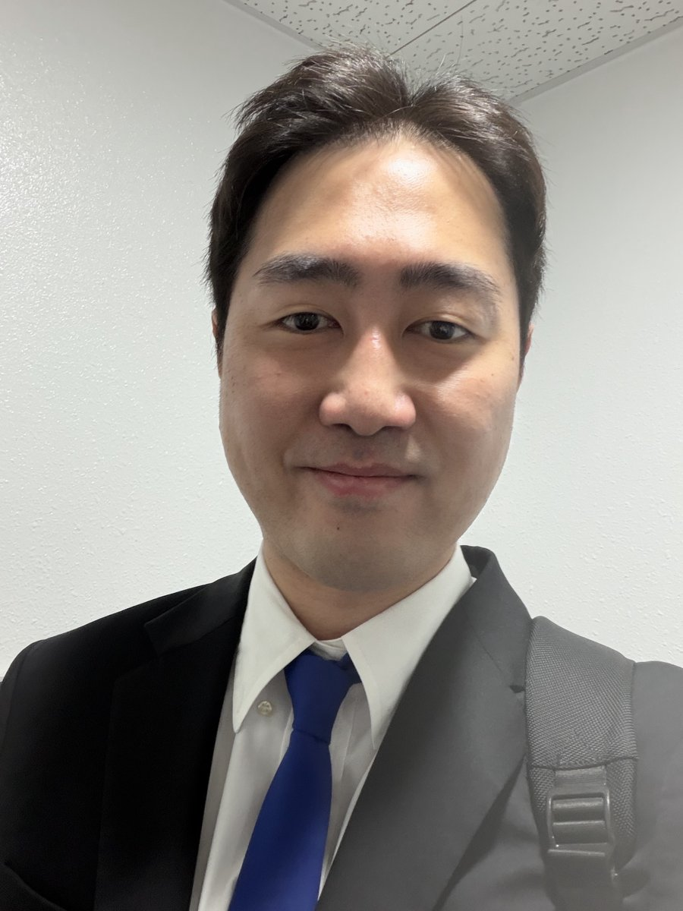

구성원People
구성원People

PI · Principal Investigator
Sunpill Kim 김선필
조교수, 숙명여자대학교 소프트웨어학부 컴퓨터과학전공Assistant Professor, Division of Software, Sookmyung Women's University
한양대학교 수학과에서 학사(2020)와 박사(2026, 지도교수 서재홍)를 받았습니다. 박사 논문 Score-Based Non-Adaptive Attack Against Face Recognition Systems로 한양대학교 우수박사학위논문상을 받았고, 2023년에는 싱가포르 A*STAR I2R에서 1년간 연구했습니다. 2024년 제1기 대학원 대통령과학장학생, 2026년 서울 AI 테크 펠로우(AI Seoul Tech Fellowship)로 선정되었으며, 2026년 9월 숙명여자대학교에 부임했습니다. B.S. (2020) and Ph.D. (2026, advisor Jae Hong Seo) in Mathematics from Hanyang University. The dissertation Score-Based Non-Adaptive Attack Against Face Recognition Systems received Hanyang's Outstanding Ph.D. Dissertation Award. Spent 2023 as a visiting researcher at A*STAR I2R, Singapore. Selected as a 1st-cohort Graduate Presidential Science Scholar (2024) and an AI Seoul Tech Fellow (2026). Joined Sookmyung in September 2026.
얼굴·화자 인식과 생성형 AI의 보안을 연구합니다. 경사하강법 없이 점수만으로 인식 시스템을 뚫는 공격, 오류정정부호와 동형암호를 이용한 생체 정보 보호, 인식 모델의 certified robustness, 딥페이크 탐지, 그리고 AI 시대의 프라이버시 계산까지 공격과 방어 양쪽을 다룹니다. IEEE S&P, ACM CCS, NeurIPS, ICCV, ECCV, CVPR 등에 논문을 발표했습니다. Works on the security of face and speaker recognition and generative AI: gradient-free attacks that break recognizers from scores alone, biometric protection with error-correcting codes and homomorphic encryption, certified robustness for recognition, deepfake detection, and private computation for the AI era. Publications at IEEE S&P, ACM CCS, NeurIPS, ICCV, ECCV, and CVPR.
학생Students
석사·박사 과정 학생을 모집합니다.Master's and Ph.D. students welcome.
2026년 9월에 문을 연 연구실입니다. 구성원이 정해지는 대로 이 자리에 소개합니다.The lab opened in September 2026. Members will be introduced here as they join.